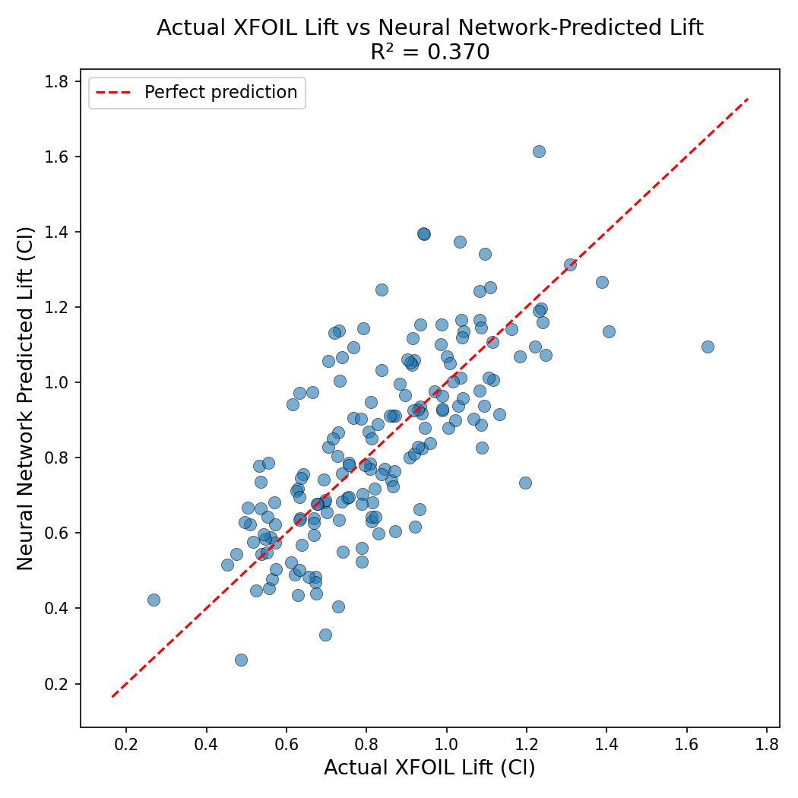

Predicting lift from shape alone, in milliseconds.
A convolutional neural network trained on real XFOIL simulations learns to read an airfoil's outline and estimate its lift coefficient — no solver required.
The problem: physics is slow
Designing an efficient wing means testing thousands of candidate shapes across many flight conditions. The standard tool, Computational Fluid Dynamics, is extremely accurate — and extremely expensive to run at that scale.
Traditional CFD / XFOIL
Each simulation numerically solves the governing flow equations for one shape, at one angle of attack, at one Reynolds number. A full design sweep can mean thousands of these runs.
Trained Neural Network
Once trained on enough physics-generated examples, the network has learned the mapping from shape to lift directly — it approximates the solver instead of running it.
The data: from coordinates to labeled images
Every airfoil starts as a list of (x, y) coordinates from the UIUC airfoil database. Each shape is run through XFOIL at a fixed Reynolds number to generate its true lift coefficient, then rendered as a clean black-and-white silhouette the network can learn from.
Coordinates
Selig-format .dat file scraped from AirfoilTools
2D Image
224×224 black silhouette on white, matched to ResNet-18 input
CSV Output
Cl and Cd from XFOIL at AoA = 5°, Re = 1,000,000
The solution: a frozen ResNet, retrained to see lift
Rather than training a CNN from scratch, the model reuses ResNet-18's pretrained vision layers — already skilled at detecting edges and curves — and repurposes only its final layer to output a single number instead of a class.
224×224 image
Airfoil silhouette
ResNet-18 backbone
Pretrained on ImageNet, weights locked
Linear(512 → 1)
New regression head
Predicted Cl
Single continuous value
for param in model.parameters(): param.requires_grad = False
model.fc = nn.Linear(512, 1) # regression head, MSE loss
The results: real correlation with true physics
After training on the 854 labeled samples, the network's predictions on unseen validation airfoils track the true XFOIL lift coefficient with a clear positive trend.
